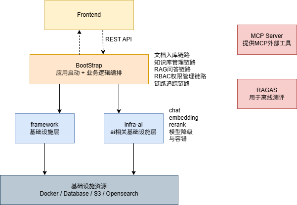
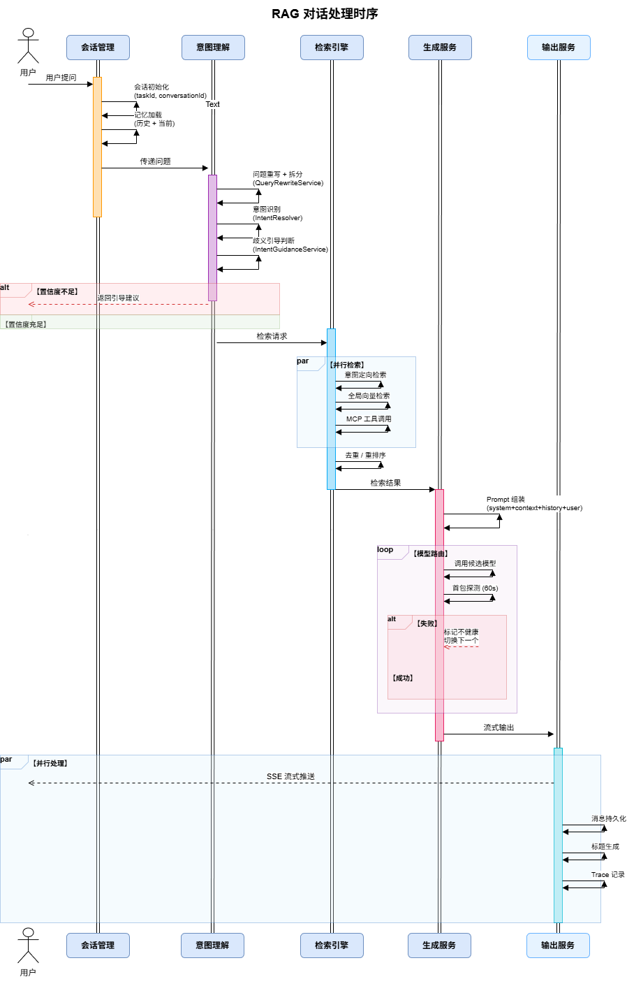

从部门知识库到知识库中台
把"一个部门的 RAG 知识库"演进为"跨部门、可复用、带 Memory 加工能力的知识库中台"。 本报告聚焦开发阶段的系统建设——链路、架构、能力模块、运营机制与未来 Memory 融合路径， 最终指向"知识库智能化"这一目标。
- 左侧导航可点击跳转，支持键盘快捷键 J/K 切换章节；顶部进度条指示阅读位置。
- 每一章节均包含：关键信息卡片（观点、结构） + 可交互演示区（当前为占位，待填充真实流程图 / 指标 / Demo）。
- 单文件 HTML：可离线演示、可打印为 PDF、可直接转发，无需部署。
整体工作拆解
把知识库分成三根能力支柱——Prompt / Context / Harness：一根决定"模型怎么想"，一根决定"模型看到什么"，一根决定"整台机器怎么跑"。 三根支柱在当前"部门知识库"之上叠加，朝知识库中台演进，最终以后端 Memory 处理管线为引擎走向知识库智能化。
- Prompt Engineering —— LLM 内部的指令体系。本项目 12 个
.st模板 + 4 个 Enhancer prompt，8 阶段动态组装。 - Context Engineering —— 有限上下文窗口内塞入"让推理做对"的信息。RAG 质量的决定性层级、工程量最大的一层。
- Harness Engineering —— 把 LLM / Prompt / Context 装进可运行、可观测、可演进的工程系统。决定系统能不能上生产、能不能持续迭代。
- 第一阶段 · 部门知识库：打通单一部门端到端链路（当前形态）
- 第二阶段 · 知识库中台：能力模块化、多业务可复用、对外统一输出
- 第三阶段 · 知识库智能化：多层 Memory 融合 + 后端加工，问答反哺知识
- 把部门里"散在文档 / 工单 / 聊天记录 / 工具调用"中的隐性知识显性化、结构化。
- 给"懂业务但不熟 AI"的同事一套稳定、可解释、可追溯的问答与工具调用入口。
- 沉淀出可跨业务复用的知识能力，而非一次性的项目交付。
系统架构：四层分工、依赖单向
系统分为 Frontend · Bootstrap · framework+infra-ai · Infrastructure 四层。
依赖方向严格单向——业务代码永远不碰具体模型或具体向量库；
AI 能力由 infra-ai 统一屏蔽 百炼 / Ollama / SiliconFlow 差异，
向量库由 VectorStoreService 统一屏蔽 OpenSearch / Milvus / pgvector。

图：系统架构总览 · 源文件 diagram/architecture/系统架构.drawio
- Frontend · React SPA —— 交互与展示；权限只做"乐观渲染"，不承担权限边界
- Bootstrap · Spring Boot —— 按业务域组织：
rag / ingestion / knowledge / user / admin / core；唯一对外接口层 - framework + infra-ai —— framework 提供 Result/异常/TTL 追踪/幂等/ID；infra-ai 统一 LLM/Embedding/Rerank 接口，内建路由和熔断降级
- Infrastructure —— PostgreSQL · Redis · RocketMQ · OpenSearch（向量） · RustFS（S3） · 外部 LLM
- 依赖单向 ——
framework / infra-ai不能反向依赖bootstrap，AI 逻辑不可出现在 framework - 业务域边界 —— 域内
controller → service → dao；跨域只读聚合放admin/ - 向量库可切换 ——
rag.vector.type切 OpenSearch / Milvus / pgvector，不改业务代码 - 外部 LLM 可替换 —— 新增供应商只动
infra-ai，加一个ChatClient实现 + yaml 候选即可
- RAG 问答（SSE） —— 8 阶段管线：AOP（限流 + traceId）→ RBAC 过滤 → 记忆加载 → 改写 / 拆分 → 意图识别 → 多路检索 → Prompt 装配 → LLM 流式生成
- 文档入库（MQ 异步） —— 上传立即返回；事务消息保证"消息发出 + 状态变更"原子；消费者跑节点链 Fetcher → Parser(Tika) → Chunker → Indexer；原子事务删旧写新
- RBAC 单一真相源 ·
KbAccessService—— 真正拦截在向量库层 filter：bool.filter: kb_id ∈ 可访问 ∧ security_level ≤ 上限 - LLM 路由降级 ·
RoutingLLMService—— 按优先级选模型，失败切换下一家，连续失败 Redis 熔断 - 全链路追踪 ·
t_rag_trace_run / t_rag_trace_node—— 每节点 IO/耗时可回放；短路点（未登录 / 无可见 KB / 歧义 / 零命中 / 纯系统意图）都可见 - 跨线程上下文 ·
TransmittableThreadLocal—— SSE 回调运行在modelStreamExecutor独立线程，RagTraceContext须透传
docs/dev/followup/）
security_level过滤只在 OpenSearch 实现——切 Milvus / pgvector 会静默失效- RocketMQ 在单机 Compose 部署收益 < 成本，计划迁移 Spring Events + @TransactionalEventListener
sendInTransaction把 MQ 概念泄漏进 framework 通用接口（ARCH-6）DefaultIntentClassifier每次请求重建意图树内存结构（ARCH-8，改为热缓存）
RAG 链路：8 阶段管线 + 可观测短路
RAG 问答由 RAGChatServiceImpl.streamChat() 编排，共 8 个显式节点，
每节点都有输入 / 输出契约、全链路 traceId 贯穿；5 类短路路径
（未登录 / 无可见 KB / 歧义 / 零命中 / 纯系统意图）都在 trace 表里一眼可见。

图：RAG 时序图 · 源文件 diagram/sequence/rag_sequence_diagram.drawio
GET /rag/v3/chat → RAGChatController → RAGChatServiceImpl.streamChat
- ① AOP 入口 ·
ChatRateLimitAspect—— 限流入队 + 生成traceId+ 写入RagTraceContext - ② RBAC 权限过滤 ·
KbAccessService.getAccessibleKbIds(userId)—— Redis 缓存kb_access:{userId} - ③ 加载对话记忆 ·
ConversationMemoryService.loadAndAppend()—— 窗口截取 + 摘要压缩 - ④ 查询改写 + 子问题拆分 ·
MultiQuestionRewriteService—— 术语归一化 → LLM 改写/拆分（T=0.1） → 兜底规则 - ⑤ 意图识别 + 歧义检测 · 并行叶子打分（
score ≥ 0.35，最多 3 个意图） →IntentGuidanceService.detectAmbiguity() - ⑥ 多通道检索 · KB 意图走
IntentDirected + VectorGlobal+ 去重 + Rerank；MCP 意图并行走工具调用（LLM 提参 → 执行） - ⑦ 上下文装配 ·
RAGPromptService.buildStructuredMessages()—— system + 证据 + 历史 + 多/单问题 - ⑧ LLM 流式生成 · SSE 帧序
content / thinking / usage / [DONE]；onComplete写回记忆 + token 用量 + RAGAS 采集
- 未登录 —— Sa-Token 拦截器拒绝
- 无可见 KB —— RBAC 返回空集
- 歧义 —— 同名意图出现在多个系统，返回引导语让用户二选一
- 纯系统意图（System-Only） —— 跳过检索直接调 LLM
- 零命中 —— 检索结果为空，返回"未检索到"而不是幻觉
t_rag_trace_run—— 一次完整问答（traceId、耗时、短路原因、token 用量）t_rag_trace_node—— 每节点 IO / 得分 / 耗时extra_dataJSON —— Gson 读 / Jackson 写（避免5228.0类型强转失败）- 跨线程透传 —— SSE 回调在独立线程，用
TransmittableThreadLocal捕获 traceId
docs/dev/research/weknora_vs_myrag.md
- 后处理薄 —— 缺 MMR 去冗余、缺阈值自动降级、缺复合评分（model + base + source 加权）
- 缺上下文重建 —— 父子块合并、区间合并、短块邻居扩展、历史引用注入 全未做
- 已领先的 —— RBAC 体系 / 模型路由熔断 / RAGAS 评测采集 / 短路机制更细
t_rag_trace_run，展开每一节点查看 prompt、召回片段、得分、耗时。
用来演示"为什么这句话回答成这样"。
Prompt 支柱：动态 Prompt 体系
Prompt 支柱决定"模型怎么想"。本项目把 Prompt 当作可版本化、可组合、可追溯的资产：
bootstrap/src/main/resources/prompt/ 下集中 12 个 .st 模板
+ EnhancerPromptManager 内嵌 4 类入库 Prompt，
统一由 PromptTemplateLoader 加载缓存，按 Scene × Intent 两维度动态组装。
- 答案生成（按 Scene） ·
answer-chat-kb.st/answer-chat-mcp.st/answer-chat-mcp-kb-mixed.st/answer-chat-system.st - 链路阶段 ·
user-question-rewrite.st·intent-classifier.st·guidance-prompt.st·conversation-summary.st·conversation-title.st·suggested-questions.st·mcp-parameter-extract.st·pdf-format-guard.st - 入库侧 · EnhancerPromptManager ·
CONTEXT_ENHANCE / KEYWORDS / QUESTIONS / METADATA
- 加载 ·
PromptTemplateLoader按 classpath 加载.st文件，ConcurrentHashMap缓存 - 渲染 ·
PromptTemplateUtils.fillSlots(template, Map<String,String>)替换{placeholder} - Scene-based 选择 ·
PromptScene枚举（KB_ONLY / MCP_ONLY / MIXED / EMPTY）决定装哪个答案模板 - Intent-driven 选择 · 意图节点的
promptTemplate字段若非空，命中单意图时优先用它，多意图回退默认
- ① Query 改写 + 拆分 ·
user-question-rewrite.st→ JSON{rewrite, should_split, sub_questions} - ② 意图分类 · 动态系统 prompt 由意图树展开构建 → JSON
[{id, score, reason}] - ③ 歧义澄清（可选） ·
guidance-prompt.st，仅在同名意图跨系统时触发 - ④ 检索（非 LLM，属 Context 支柱）
- ⑤ 答案装配 ·
RAGPromptService.buildStructuredMessages()按 Scene 选模板，拼 system + 证据 + 历史 + 问题 - ⑥ 答案生成 · 主 LLM 调用，SSE 流式
- ⑦ 对话摘要 + 推荐追问（异步） ·
conversation-summary.st·suggested-questions.st - ⑧ 会话标题（首轮） ·
conversation-title.st
- 结构化输出强约束 —— 意图分类、Query 改写、参数抽取全部 JSON schema 强约束，消除后处理解析失败
- Scene × Intent 双维度选择 —— 业务侧改 Prompt 不动代码，意图节点挂模板即可自定答案风格
- 对话摘要只存"主题索引 + 是否已答" —— 不存答案本体，避免与新检索碰撞（见
conversation-summary.st） - 多问题自动编号装配 ——
buildStructuredMessages对子问题自动加 "1./2./..."，防止 LLM 漏答
- Prompt 版本管理 + Diff + 离线 A/B
- 与评测基线绑定：任何 Prompt 改动触发回归
- 剥离模型特定写法（避免 prompt 与单一模型耦合）
- 与 Memory 支柱联动：按用户 / 部门画像动态挑选 Prompt 片段
Context 支柱：RAG 质量的决定性层级
定位：在有限上下文窗口内，塞进"最能让这次推理做对"的信息。 这是 RAG 质量的决定性层级，也是工程量最大的一层—— 由检索前、检索中、检索后、对话状态四个子系统组成。
- Query Rewriting —— 对话中的指代消解、department context 补全
- HyDE / Query Expansion —— 生成假设性答案做检索，对自然语言多、专业术语少的问题收益明显
- Multi-query —— 一次问题拆多子查询并行检索，特别适合"对比 A 和 B 的合规差异"这类问题
- 意图路由 —— 闲聊走不走 RAG？结构化问题是不是直接走 SQL？路由错判会放大下游所有成本
- BM25 + KNN + KG 三路并行，RRF 融合。经验：BM25 在法规术语的精确匹配上经常胜过纯向量；向量擅长语义改写；KG 擅长关系型查询（"谁签了什么协议"）。三路互补。
- Rerank 是性价比最高的单点投入 —— cross-encoder 把 top-50 压到 top-5，显著降低 context 噪声。本项目已用
gte-rerank。 - 提醒rerank query 必须用 canonical first-round query——多轮改写后的 query 送进 rerank 会导致 drift（之前已踩过）
- 权限过滤必须下推到检索引擎层（OpenSearch filter），不能召回后过滤——否则既泄露元信息也浪费召回配额
- 去重 —— 跨 chunk、跨 round 的语义去重。Agentic 多轮最容易把同一份源文档反复塞进去
- 排序 —— 不是按相关度，而是按"对生成最有用"的顺序：通常最相关的放 prompt 末尾（recency bias 比 primacy 更强）
- 压缩 —— 长 chunk 用 LLMLingua 或模型自己做抽取式压缩；表格类要保持结构化
- Token 预算 ——
TokenBudgetManager方向对。按"系统 prompt + 对话历史 + 检索上下文 + 生成预留"四段预算，超额时按优先级截断，别让框架默认从最前面截掉系统指令
- 超过 N 轮做 running summary，不要无脑拼接历史
- 用户 / 部门画像作为隐式上下文——FICC vs EQD 对同一个问题的默认倾向是不一样的
- 本项目
JdbcConversationMemorySummaryService已实现异步压缩 + Redis 锁；summary 作为 SYSTEM 消息 prepend，只存主题索引不存答案
- Chunking 一刀切 —— 512 token 固定窗口对条款类文档是灾难，应该按结构切分 + 父子 chunk
- 元数据埋点不够 —— 后期想做权限 / 时效过滤才发现字段不存在
- 没做 retrieval-only 评估 —— 出了问题分不清是召回差还是生成差
Harness 支柱：模型之外的工程体系
定位：把 LLM / Prompt / Context 这些"LLM 内部"的组件，装进一个可运行、可观测、可演进的工程系统。 这一层决定了系统能不能上生产、能不能持续迭代——缺 Harness 的项目只能跑 demo。
Prompt 支柱决定模型怎么想；Context 支柱决定模型看到什么；Harness 支柱决定整台机器怎么跑、怎么修、怎么进化。 三者不是三段流程，而是每一次请求同时经过的三根支柱——Harness 负责把前两根支柱的产物 安全、可观测、可恢复地送进模型、把结果送出来。
- 四大架构不变量（见 02）—— 依赖单向是 Harness 最底层的保证
- 链路编排 ·
RAGChatServiceImpl串起 8 阶段，短路点可观测 - 全链路 Trace ·
t_rag_trace_run / t_rag_trace_node，traceId 跨线程透传（TTL） - AOP 横切 · 限流入队 / traceId 生成 / TTL 追踪 / 幂等
- LLM 路由降级 ·
RoutingLLMService按优先级选模型，Redis 熔断 - 向量库抽象 ·
VectorStoreService屏蔽 OpenSearch / Milvus / pgvector - 并发 / 锁 · Redis 锁保证摘要不重复生成；异步池跑 summary / 推荐问题
- RBAC 单一真相源 · 真正拦截在向量库层 filter
- 工具调度 · MCP Server +
LLMMCPParameterExtractor（并行 + 容错） - MQ 事务消息 · 状态变更 + 消息发送原子
- 控制流编排 —— 何时检索、何时调工具、何时反思 / 重试
- 可靠性 —— 超时 / 重试 / 降级 / 熔断；结构化输出失败的修复循环（re-prompt with validator error）
- 可观测性 —— Trace / Span / Metrics / Eval Hook，支持回放
- 资源管理 —— Token 预算 / 速率限制 / 成本追踪 / 缓存
- 模型路由 —— 便宜模型做意图 / 改写；强模型做合成；超时回退
- Memory 编排 —— 决定本次调用读 / 写哪层 Memory（详见 10 Memory 融合）
- 评测闭环 —— Trace → 评测集 → 回归，绑定 Prompt / Context 变更
docs/dev/followup/architecture-backlog.md
- MQ-1 · RocketMQ → Spring Events —— 单机部署复杂度下降，本地开发去掉 broker 依赖（约半天到一天）
- ARCH-6 ·
sendInTransaction概念泄漏 —— "本地事务"是 RocketMQ 专有概念，不应出现在通用接口签名 - ARCH-7 ·
TransactionSynchronizationManager出现在业务 Service —— 改@TransactionalEventListener(AFTER_COMMIT) - ARCH-8 · 意图树每次重建 —— 改为
volatile IntentTreeData hotCache，CRUD 时主动 refresh - 统一 Harness 抽象层 —— 把零散能力收敛为中台的"运行层"，对外暴露统一 SDK / 契约
意图识别
意图识别是"工具 / 知识库 / 多路召回"的总调度员——它决定一个问题该走 FAQ、走检索、走工具，还是走拒答。 当前采用 规则 + 分类器 + 向量意图树 的混合策略，目标是"可解释 + 可扩展"。
- SimpleIntentClassifier：快速规则/关键词
- VectorTreeIntent：层级向量意图树
- LLM Fallback：兜底泛化
- FAQ 直答
- RAG 检索
- 工具 / API 调用
- 澄清 / 拒答
- 意图边界模糊 / 多意图并存
- 冷启动：新业务的意图样本稀缺
- 与 Memory 联动：基于用户上下文调整意图
部门工具 & API 生态
知识库不止于"检索文档"——把部门内部工具、业务 API、数据查询能力经由 MCP / 工具协议 统一接入， 才能做到"问得到、查得到、也办得到"。
- MCP Server：统一工具注册与发现
- Tool Adapter：对内部 API 做参数/鉴权适配
- Schema 驱动：工具描述即 Prompt，降低调优成本
- 审计与配额：每一次工具调用可追溯
知识运营
知识运营讨论的是机制，不是 KPI：知识如何进来、被用、被修、再进化。 一套可持续的运营机制，是知识库"活下去"并反哺中台的前提。
- 来源管理、去重、敏感信息过滤
- 结构化切片与元数据标注
- 版本 / 生命周期 / 归属人
- 引用回链：每条回答可溯源到条目
- 反馈入口：赞 / 踩 / 补充 / 纠错
- 未覆盖问题自动沉淀为候选条目
- Badcase 标注 → 责任人 → 修复流转
- 评测集随运营自动回流
- 过期 / 冲突条目的下线与仲裁
- 运营收集到的问题与反馈 → 进入后端 Memory 处理管线
- Memory 蒸馏出的"高频问题 / 部门共识" → 作为候选条目进入入库机制
- 知识运营本身成为中台的一个能力模块，支持多部门各自运营各自的知识域
Memory 融合：迈向知识库智能化
这是整个中台叙事的"智能化引擎"。把 RAG 从"每次冷启动的检索问答"升级为有记忆、会学习、能沉淀的系统—— 通过 会话 / 用户 / 部门 / 组织 多层 Memory 的协同，以及后端异步加工管线， 让问答持续反哺知识本身。
① Session Memory
一次会话内的短期上下文、澄清记录、已展示证据。
② User Memory
用户画像、偏好、常问主题、历史反馈与纠错。
③ Department Memory
部门共识、Runbook、常见流程、组内术语。
④ Org Memory
跨部门通用规则、制度、上下游接口约定。
- 意图识别前：用 User / Department Memory 修正路由
- 检索阶段：用 Session Memory 做上下文续接
- Prompt 组装：按层级动态挑选记忆片段
- 工具调用：复用偏好参数与历史成功模式
- 抽取：从对话 / 反馈 / 调用中抽取结构化条目
- 聚合 & 去重：跨会话合并相似条目
- 蒸馏：升格为"部门共识 / 高频问题 / 失败模式"
- 反哺：高置信度条目回写到正式知识库
- 隐私 / 权限：Memory 的读写边界必须与 RBAC 一致，User 不泄露到 Department，Department 不随意汇入 Org
- 遗忘策略：时效衰减、冲突仲裁、用户可撤销
- 可解释：每一条被用到的 Memory 都要在 Trace 中可追溯
- 反哺门槛：Memory → 知识库主库必须经过置信度与人审双闸门
Roadmap & 总结
沿"部门知识库 → 知识库中台 → 知识库智能化"三阶段推进， 每一阶段都有明确的架构动作与能力产出，且彼此向下兼容、渐进交付。
- 打通端到端 RAG 链路与 Trace
- Prompt / Context 资产化
- 意图识别 + Top N 部门工具接入
- 基础运营机制：入库 / 反馈 / Badcase
- 能力层抽离：统一 API / SDK / 对话入口
- 多租户 / 多业务隔离
- Memory 四层骨架上线（前台注入）
- 运营机制模块化，支持多部门各自运营
- 后端 Memory 处理管线完整落地
- Memory 蒸馏 → 反哺知识库主库
- 问答 / 工具调用 / 反馈共同驱动知识自演进
- 跨部门知识协同与互通
- [占位] 人力 / 算力 / 数据 诉求
- [占位] 跨部门协作：数据源、工具权限、业务共建
- [占位] 指标对齐：OKR / 考核口径